| Nr | Opcja | Punkty | Poprawna | Odpowied¼ |
|---|
| 1 | Rozwa¿my nieskierowany graf prosty  , którego wierzcho³ki etykietowane s± liczbami naturalnymi od , którego wierzcho³ki etykietowane s± liczbami naturalnymi od  do do  w³±cznie, zadany tabic± list s±siedztwa postaci: 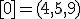, 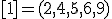, 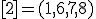, 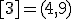, 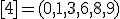, 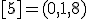, 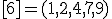, 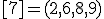, 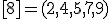, 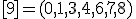 i przedstawiony na poni¿szym rysunku. Dla grafu w³±cznie, zadany tabic± list s±siedztwa postaci: 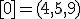, 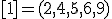, 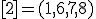, 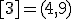, 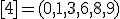, 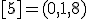, 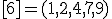, 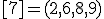, 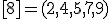, 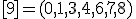 i przedstawiony na poni¿szym rysunku. Dla grafu  stosujemy algorytm kolorowania LF (largest first). Które z poni¿szych
zdañ jest prawdziwe? Uwaga! W przypadku niejednoznacznej mo¿liwo¶ci
wyboru wierzcho³ków, jako pierwszy wybieramy wierzcho³ek z mniejsz±
etykiet±. Kolory indeksujemy od
stosujemy algorytm kolorowania LF (largest first). Które z poni¿szych
zdañ jest prawdziwe? Uwaga! W przypadku niejednoznacznej mo¿liwo¶ci
wyboru wierzcho³ków, jako pierwszy wybieramy wierzcho³ek z mniejsz±
etykiet±. Kolory indeksujemy od  . . 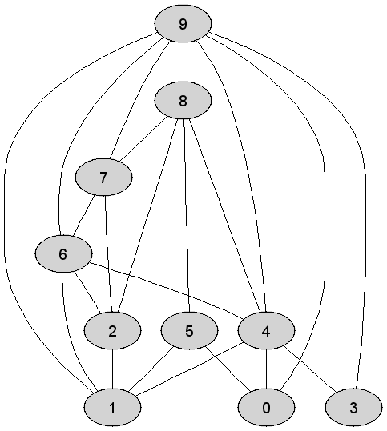 |
| Kolejno¶æ kolorowania wierzcho³ków grafu  w trakcie wykonania algorytmu LF jest nastêpuj±ca: 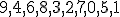 w trakcie wykonania algorytmu LF jest nastêpuj±ca: 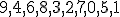 | 0 | | |
| Po zastosowaniu algorytm LF wierzcho³ek 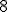 ma przypisany taki sam kolor jak wierzcho³ek  | 1 | + | |
| Kolejno¶æ kolorowania wierzcho³ków grafu  w trakcie wykonania algorytmu LF jest nastêpuj±ca: 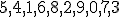 w trakcie wykonania algorytmu LF jest nastêpuj±ca: 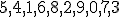 | 0 | | |
| 2 | Rozwa¿my kopiec binarny  typu min zaimplementowany w drzewie binarnym i powsta³y na skutek kolejnego wstawiania elementów ci±gu 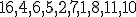 do pocz±tkowo pustej struktury (przy u¿yciu operacji INSERT). Które z poni¿szych zdañ jest prawdziwe? typu min zaimplementowany w drzewie binarnym i powsta³y na skutek kolejnego wstawiania elementów ci±gu 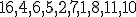 do pocz±tkowo pustej struktury (przy u¿yciu operacji INSERT). Które z poni¿szych zdañ jest prawdziwe? |
| Je¿eli zamiast drzewa binarnego do implementacji kopca binarnego  u¿yjemy tablicy, to jej finalna postaæ bêdzie nastêpuj±ca: u¿yjemy tablicy, to jej finalna postaæ bêdzie nastêpuj±ca:  | 0 | | |
| Etykiety wierzcho³ków drzewa-kopca  wypisane w kolejno¶ci PostOrder tworz± ci±g: 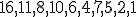 wypisane w kolejno¶ci PostOrder tworz± ci±g: 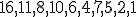 | 0 | | |
| Etykiety wierzcho³ków drzewa-kopca  wypisane w kolejno¶ci PostOrder tworz± ci±g: 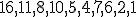 wypisane w kolejno¶ci PostOrder tworz± ci±g: 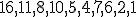 | 1 | + | |
| 3 | Rozwa¿my kopiec binarny  typu min zaimplementowany w drzewie binarnym. Kopiec typu min zaimplementowany w drzewie binarnym. Kopiec  konstruujemy z elementów ci±gu 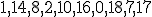 stosuj±c szybki algorytm budowy kopca HeapConstruct. Które z poni¿szych zdañ jest prawdziwe? konstruujemy z elementów ci±gu 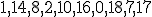 stosuj±c szybki algorytm budowy kopca HeapConstruct. Które z poni¿szych zdañ jest prawdziwe? |
| Liczba wierzcho³ków wewnêtrznych drzewa-kopca  jest równa dok³adnie jest równa dok³adnie | 0 | | |
| Etykiety wierzcho³ków drzewa-kopca  wypisane w kolejno¶ci InOrder tworz± ci±g: 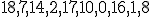 wypisane w kolejno¶ci InOrder tworz± ci±g: 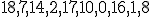 | 1 | + | |
| Je¿eli zamiast drzewa binarnego do implementacji kopca binarnego  u¿yjemy tablicy, to jej finalna postaæ bêdzie nastêpuj±ca: 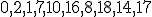 u¿yjemy tablicy, to jej finalna postaæ bêdzie nastêpuj±ca: 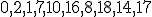 | 1 | + | |
| 4 | Rozwa¿my kopiec binarny  typu min zaimplementowany w drzewie binarnym. Kopiec typu min zaimplementowany w drzewie binarnym. Kopiec  konstruujemy z elementów ci±gu 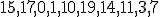 stosuj±c szybki algorytm budowy kopca HeapConstruct. Nastêpnie w kopcu konstruujemy z elementów ci±gu 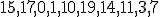 stosuj±c szybki algorytm budowy kopca HeapConstruct. Nastêpnie w kopcu  wykonujem wykonujem  -krotnie operajê DELMIN. Które z poni¿szych zdañ jest prawdziwe? -krotnie operajê DELMIN. Które z poni¿szych zdañ jest prawdziwe? |
| Liczba wierzcho³ków wewnêtrznych drzewa-kopca 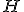 jest równa dok³adnie | 0 | | |
| Wysoko¶æ drzewa-kopca  jest równa dok³adnie jest równa dok³adnie  | 1 | + | |
| Etykiety wierzcho³ków drzewa-kopca  wypisane w kolejno¶ci InOrder tworz± ci±g: 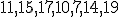 wypisane w kolejno¶ci InOrder tworz± ci±g: 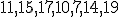 | 0 | | |
| 5 | Rozwa¿my drzewo kodowe Huffmana 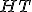
powsta³e na skutek zastosowania algorytmu budowy drzewa kodu Huffmana
dla ci±gu znaków zawieraj±cego odpowiednio (znak - krotno¶æ wyst±pieñ):
, , 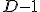, 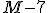, 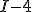, 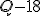, , 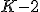.
Które z poni¿szych zdañ jest prawdziwe? Uwaga! W przypadku
niejednoznacznego wyboru poddrzew, za mniejsze uznajemy to, którego
etykiet li¶ci czytane od lewej do prawej strony tworz± s³owo mniejsze w
sensie porz±dku leksykograficznego. |
| Kod litery  odczytany z drzewa odczytany z drzewa  jest nastêpuj±cy: jest nastêpuj±cy: | 1 | + | |
| Kod litery odczytany z drzewa  jest nastêpuj±cy: jest nastêpuj±cy: | 0 | | |
| Kod litery odczytany z drzewa  jest nastêpuj±cy: jest nastêpuj±cy: | 1 | + | |
| 6 | Rozwa¿my nieskierowany graf prosty  z wagami, którego wierzcho³ki etykietowane s± liczbami naturalnymi od z wagami, którego wierzcho³ki etykietowane s± liczbami naturalnymi od  do do  w³±cznie, zadany tabic± list s±siedztwa postaci: w³±cznie, zadany tabic± list s±siedztwa postaci:  , 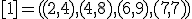, 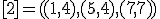, 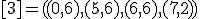, 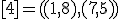, 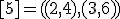, 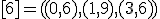, 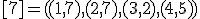 i przedstawiony na poni¿szym rysunku. Dla grafu , 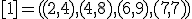, 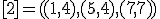, 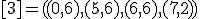, 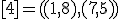, 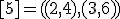, 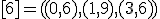, 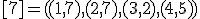 i przedstawiony na poni¿szym rysunku. Dla grafu  i wierzcho³ka startowego i wierzcho³ka startowego  stosujemy stosujemy algorytm Prima wyznaczenia minimalnego drzewa
rozpinaj±cego. Które z poni¿szych zdañ jest prawdziwe? Uwaga! W
przypadku niejednoznacznej mo¿liwo¶ci wyboru wierzcho³ków, jako
pierwszy wybieramy wierzcho³ek z mniejsz± etykiet±.
stosujemy stosujemy algorytm Prima wyznaczenia minimalnego drzewa
rozpinaj±cego. Które z poni¿szych zdañ jest prawdziwe? Uwaga! W
przypadku niejednoznacznej mo¿liwo¶ci wyboru wierzcho³ków, jako
pierwszy wybieramy wierzcho³ek z mniejsz± etykiet±. 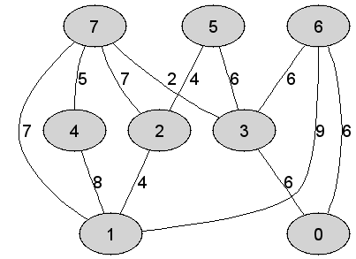 |
| Kolejno¶æ przy³±czania wierzcho³ków do minimalnego drzewa rozpinaj±cego grafu  w trakcie wykonania algorytmu Prima jest nastêpuj±ca: 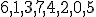 w trakcie wykonania algorytmu Prima jest nastêpuj±ca: 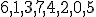 | 0 | | |
| Wysoko¶æ minimalego drzewa rozpinaj±cego bêd±cego rezultatem dzia³ania algorytmu Prima jest równa dok³adnie  | 1 | + | |
| Liczba
wierzcho³ków zewnêtrznych w minimalym drzewie rozpinaj±cym bêd±cym
rezultatem dzia³ania algorytmu Prima jest równa dok³adnie 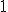 | 0 | | |
| 7 | Rozwa¿my zach³anny algorytm PrimTSP rozwi±zuj±cy problem komiwoja¿era w  -wierzcho³kowym grafie , którego wierzcho³ki etykietowane s± liczbami naturalnymi od -wierzcho³kowym grafie , którego wierzcho³ki etykietowane s± liczbami naturalnymi od  do 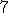 w³±cznie i rozmieszczone s± w odpowiednio nastêpuj±cych punktach p³aszczyzny euklidesowej: 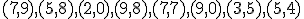. Które z poni¿szych zdañ jest prawdziwe je¿eli wierzcho³kiem startowym jest do 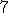 w³±cznie i rozmieszczone s± w odpowiednio nastêpuj±cych punktach p³aszczyzny euklidesowej: 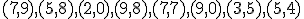. Które z poni¿szych zdañ jest prawdziwe je¿eli wierzcho³kiem startowym jest  ? Uwaga! W przypadku niejednoznacznej mo¿liwo¶ci wyboru wierzcho³ków, jako pierwszy wybieramy wierzcho³ek z mniejsz± etykiet±. ? Uwaga! W przypadku niejednoznacznej mo¿liwo¶ci wyboru wierzcho³ków, jako pierwszy wybieramy wierzcho³ek z mniejsz± etykiet±. |
| Krawêd¼ 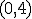 nale¿y do wyznaczonego cyklu Hamiltona w grafie  | 1 | + | |
| Kolejno¶æ przy³±czania wierzcho³ków do konstruowanego cyklu Hamiltona w trakcie wykonania algorytmu PrimTSP jest nastêpuj±ca: 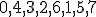 | 0 | | |
| Maksymalna wysoko¶æ stosu pomocniczego u¿ytego do realizacji przej¶cia grafu  metod± DFS w celu wyznaczenia cyklu Hamiltona jest równa dok³adnie metod± DFS w celu wyznaczenia cyklu Hamiltona jest równa dok³adnie  | 0 | | |
| 8 | Jaka
bêdzie kolejno¶æ elementów tablicy po wykonaniu algorytmu
Construct, konstrukcji kopca w tablicy, je¶li na pocz±tku tablica
zawiera³a liczby 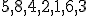 (w podanym porz±dku)? |
| Kolejno¶æ elementów nie ulegnie zmianie | 0 | | |
| Taka sama jak w przypadku tablicy postaci pocz±tkowej 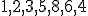 | 1 | + | |
| 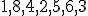 | 0 | | |
| 9 | Co robi nastêpuj±cy algorytm 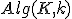, gdzie 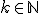 - int i;
- for i:=1 to k do
- K:=delmin(K);
- od;
- return min(K);
je¶li  jest kopcem o jest kopcem o  elementach i 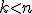? elementach i 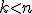? |
| Znajduje 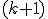-szy co do wielkosci element kopca  | 1 | + | |
| Znajduje -ty co do wielko¶ci element kopca | 0 | | |
| Z kosztem ze wzglêdu na liczbê operacji porównañ elementów kopca , znajduje -szy najwiêkszy element struktury | 1 | + | |
| 10 | Rozwa¿my tekst sk³adaj±cy siê z symboli bêd±cych cyframi dziesiêtnymi ze zbioru , gdzie cyfra wystêpuje: - razy, je¿eli
 jest liczb± parzyst±, jest liczb± parzyst±, - razy, je¿eli jest liczb± nieparzyst±.
Na
podstawie rozwa¿anego tekstu zbudowano drzewo kodowe Huffmana. Który z
poni¿szych kodów binarnych reprezentuje zadan± liczbê naturaln±  ? ? |
| , je¿eli | 1 | + | |
| , je¿eli | 0 | | |
| , je¿eli | 1 | + | |
| 11 | Rozwa¿my nieskierowany graf prosty  z wagami, którego wierzcho³ki etykietowane s± liczbami naturalnymi od z wagami, którego wierzcho³ki etykietowane s± liczbami naturalnymi od  do do  w³±cznie, zadany tabic± list s±siedztwa postaci: , , , , , , , i przedstawiony na poni¿szym rysunku. Dla grafu w³±cznie, zadany tabic± list s±siedztwa postaci: , , , , , , , i przedstawiony na poni¿szym rysunku. Dla grafu  stosujemy algorytm Kruskala wyznaczenia minimalnego drzewa
rozpinaj±cego. Które z poni¿szych zdañ jest prawdziwe? Uwaga! W
przypadku niejednoznacznej mo¿liwo¶ci wyboru krawêdzi, jako pierwsz±
wybieramy krawêd¼, której etykiety wierzcho³ków krañcowych w kolejno¶ci
niemalej±cej tworz± mniejsz± liczbê naturaln±.
stosujemy algorytm Kruskala wyznaczenia minimalnego drzewa
rozpinaj±cego. Które z poni¿szych zdañ jest prawdziwe? Uwaga! W
przypadku niejednoznacznej mo¿liwo¶ci wyboru krawêdzi, jako pierwsz±
wybieramy krawêd¼, której etykiety wierzcho³ków krañcowych w kolejno¶ci
niemalej±cej tworz± mniejsz± liczbê naturaln±. |
| Liczba
krawêdzi grafu odrzuconych (ze wzglêdu na mo¿liwo¶æ utworzenia cyklu) w
trakcie konstrukcji drzewa rozpinaj±cego, tu¿ po ustaleniu jego
finalnej postaci, jest równa dok³adnie  | 1 | + | |
| Liczba
krawêdzi grafu odrzuconych (ze wzglêdu na mo¿liwo¶æ utworzenia cyklu) w
trakcie konstrukcji drzewa rozpinaj±cego, tu¿ po ustaleniu jego
finalnej postaci, jest równa dok³adnie | 0 | | |
| Liczba
krawêdzi grafu odrzuconych (ze wzglêdu na mo¿liwo¶æ utworzenia cyklu) w
trakcie konstrukcji drzewa rozpinaj±cego, jeszcze przed ustaleniem jego
finalnej postaci, jest równa dok³adnie | 1 | + | |
| 12 | Rozwa¿my zach³anny algorytm KruskalTSP rozwi±zuj±cy problem komiwoja¿era w -wierzcho³kowym grafie  , którego wierzcho³ki etykietowane s± liczbami naturalnymi od , którego wierzcho³ki etykietowane s± liczbami naturalnymi od  do do  w³±cznie i rozmieszczone s± w odpowiednio nastêpuj±cych punktach p³aszczyzny euklidesowej: .
Które z poni¿szych zdañ jest prawdziwe? Uwaga! W przypadku
niejednoznacznej mo¿liwo¶ci wyboru krawêdzi, jako pierwsz± wybieramy
krawêd¼, której etykiety wierzcho³ków krañcowych w kolejno¶ci
niemalej±cej tworz± mniejsz± liczbê naturaln±. w³±cznie i rozmieszczone s± w odpowiednio nastêpuj±cych punktach p³aszczyzny euklidesowej: .
Które z poni¿szych zdañ jest prawdziwe? Uwaga! W przypadku
niejednoznacznej mo¿liwo¶ci wyboru krawêdzi, jako pierwsz± wybieramy
krawêd¼, której etykiety wierzcho³ków krañcowych w kolejno¶ci
niemalej±cej tworz± mniejsz± liczbê naturaln±. |
| Kolejno¶æ
akceptowania krawêdzi grafu do konstruowanego cyklu Hamiltona w trakcie
wykonania rozwa¿anego algorytmu jest nastêpuj±ca: | 0 | | |
| Kolejno¶æ
akceptowania krawêdzi grafu do konstruowanego cyklu Hamiltona w trakcie
wykonania rozwa¿anego algorytmu jest nastêpuj±ca: | 1 | + | |
| Krawêd¼ nale¿y do wyznaczonego cyklu Hamiltona w grafie  | 0 | | |